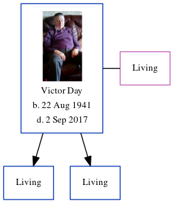

Victor S Day 1941 - 2017
[ Home ] | [ Calendar ] | [ Surnames Index ] | [ Errors ] | [ Family History ]Victor Day, the husband of Frances M Cowell (the second cousin on the mother's side of Nigel Horne), was born in Bridge, Kent, England on 22 Aug 19411 and. He married Frances (with whom he had 2 surviving children Trevor and Kevin Stanley) in Thanet, Kent, England on 6 Oct 19622. About 2003, he was living at 88 King Edward Road, Birchington, Kent3.
He died on 2 Sept 2017.
Citations
- England & Wales births 1837-2006 - Findmypast
- England & Wales, Marriage Index: 1916-2005 Online publication - Provo, UT, USA: The Generations Network, Inc., 2009.Original data - General Register Office. England and Wales Civil Registration Indexes. London, England: General Register Office. © Crown copyright. Published by permission of the Cont
- UK, Electoral Registers, 2003-2010
Media
Victor Day

England & Wales marriages 1837-2008 - BMD/M/1962/4/AZ/000298/074
England & Wales births 1837-2006 - BMD/B/1941/4/AZ/000268/148
Family Tree
Map
Generated by ged2site. Last updated on Jul 3, 2024
Known Issues
Death date (2 Sep 2017) has no citations
Listed in the residence for abt 2003, but spouse Frances Cowell is not
Date of death is known, but not place